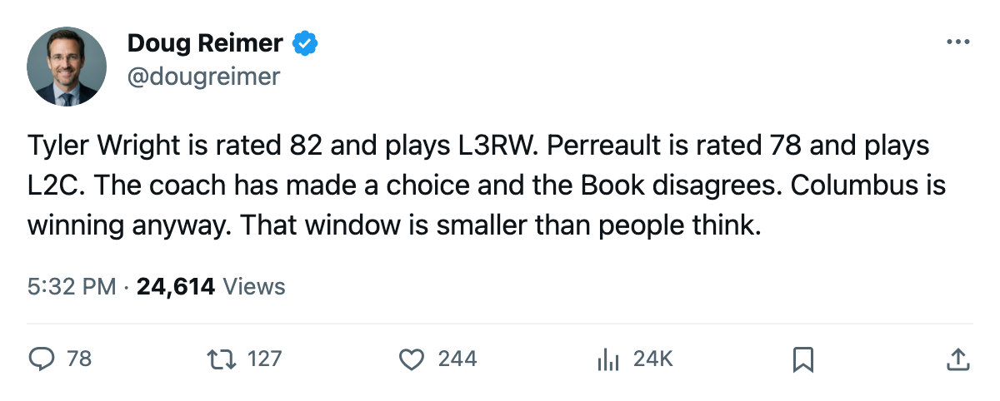
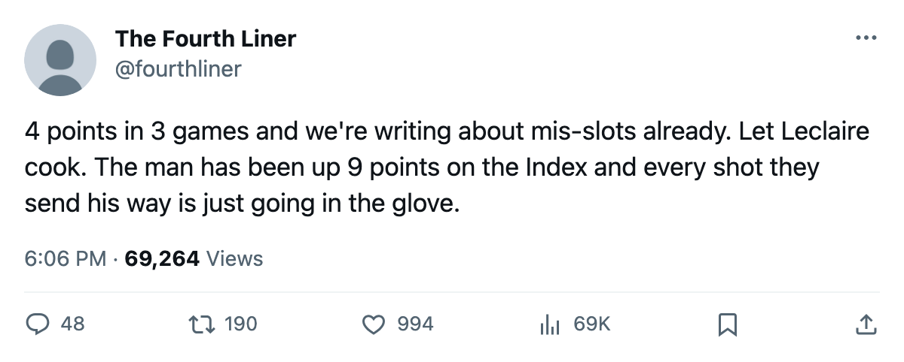

CBJ
CBJ4 Mis-Slots, 90.3 Morale, 4 Points: The Columbus Sheet After 3 Games
The desk's method flags Tyler Wright, Joe Juneau, Josh Holden and Trevor Letowski at a club tied for first in the West that nobody has covered yet.
 Doug ReimerAnalytics editor, ex-video coach · The Slot Report
Doug ReimerAnalytics editor, ex-video coach · The Slot Report
Columbus is tied for first in the Western Conference at 4 points after 3 games. It also carries the lowest club morale in the league at 90.3 and four players who sit on lines below men rated lower at their position. The desk ran the same method that caught Boston's  Sergei Samsonov87 at 86 on the third line last week. Columbus produced four flags. No other club this early has more than three.
Sergei Samsonov87 at 86 on the third line last week. Columbus produced four flags. No other club this early has more than three.
The method
At each position, the desk compares a third- or fourth-liner's current overall (the Bureau's Book grade, which includes form) against the top-six man at that same position. A player qualifies as mis-slotted when his overall exceeds the top-six man's by any amount. The gap is the number that matters. A 1-point gap is a coach's preference. A 15-point gap at the same position, across the same game, is a deployment problem.
The table
| player | position | overall | line | above | above overall | gap |
|---|---|---|---|---|---|---|
| Tyler Wright78 [1094] | C | 82 | L3RW |  Yanic Perreault74 [769] Yanic Perreault74 [769] | 78 | 4 |
| Tyler Wright [1094] | C | 82 | L3RW |  Jim Montgomery63 [675] Jim Montgomery63 [675] | 67 | 15 |
 Joe Juneau71 [457] Joe Juneau71 [457] | C | 75 | L3C | Jim Montgomery [675] | 67 | 8 |
 Josh Holden70 [405] Josh Holden70 [405] | C | 74 | L4C | Jim Montgomery [675] | 67 | 7 |
 Trevor Letowski70 [578] Trevor Letowski70 [578] | C | 74 | L4LW | Jim Montgomery [675] | 67 | 7 |
Wright triggers two flags. The desk counts unique players: Wright, Juneau, Holden, Letowski. That is 4.
The Wright case
Wright sits at 82 overall and appears in four slot assignments: third-pair center (32C_), home bench (H2), penalty-kill center (K1C), and third-line right wing (L3RW). He is a center playing right wing on the third line while Yanic Perreault (78) holds the second-line center spot. Wright outgrades Perreault by 4. Jim Montgomery, rated 67, splits the third-pair center slot and the fourth-line right wing position.
Wright's deployment is the most confusing on the sheet. A player rated 82, who can kill penalties at center and center a third pair, is parked at wing on the third line. That is not a role. That is a parking lot.
Sanderson on an expiring deal
 Geoff Sanderson82 [876] carries a $6.34M salary, 1 year remaining, a Book overall of 86, and 1 point in 3 games. His morale reads 90. The CBJ club average is 90.3, meaning Sanderson sits essentially at the floor of a league-low group.
Geoff Sanderson82 [876] carries a $6.34M salary, 1 year remaining, a Book overall of 86, and 1 point in 3 games. His morale reads 90. The CBJ club average is 90.3, meaning Sanderson sits essentially at the floor of a league-low group.
The contract-year class lists Sanderson at 86 overall. He is the highest-rated CBJ player whose deal expires in June. The mis-slot table does not flag him because the sheet's position comparison depends on lineup assignment, and the brief does not list him with a slot tag on the mis-slot table. But the $6.34M is on the payroll, the 1 point is on the stat line, and the 1 year is on the clock.
If Columbus cannot find production from an 86 at the top of a mis-slotted forward group, the June deadline arrives with no negotiating leverage.
Leclaire is the counterweight
The one place Columbus has no mis-allocation problem is the crease.  Pascal Leclaire89 [1202] has started all 3 games (100%), his Book overall reads 93, and the Bureau's Development Index has him at +9 (base 83, current 93). He entered the league as the 8th pick in 2001.
Pascal Leclaire89 [1202] has started all 3 games (100%), his Book overall reads 93, and the Bureau's Development Index has him at +9 (base 83, current 93). He entered the league as the 8th pick in 2001.
Leclaire is the only starting goaltender in the league whose Index move is +9 or higher while playing every game. The next closest is  Rick DiPietro88 [229] at NYI at +9, also 100% workload, also rated 88 on the Book.
Rick DiPietro88 [229] at NYI at +9, also 100% workload, also rated 88 on the Book.
The goaltending deployment at Columbus is the cleanest in the league: one man, every start, the biggest Index gain among full-time starters. The forward deployment is the messiest.
Morale in context
The Bureau's Morale Scale puts CBJ at 90.3. The league range runs from 90.3 at Columbus to 99.5 at  Vancouver Canucks. CBJ sits at the bottom.
Vancouver Canucks. CBJ sits at the bottom.
Whether it connects to the mis-slots is not on the sheet. What is on the sheet is that the 4 clubs with the lowest morale (CBJ 90.3, ATL 90.6, CAR 90.9, MIN 91.7) include 2 with mis-slot flags (CBJ, CAR) and 1 without any flagged player on the brief's list (ATL, MIN). The correlation is 2 of 4. Not clean.
What the morale number does tell the desk: when a club at 90.3 carries a player rated 82 on the wing while a 78-center holds the second-line slot, the deployment is not a product of locker-room consensus. The coach sat him. That is the only variable the desk controls for.
What to watch
Wright's 4 assignments across the sheet (32C, H2, K1C, L3RW) suggest the coaching staff has not decided what he is. At 82, he grades as a top-nine center. He is playing as a utility body. The gap between the rating and the role is the story, and it is not going to resolve itself in 79 more games without a trade or a line change.
Sanderson's $6.34M buys 1 point in 3 games on a deal that expires in 8 months. The club's overall cost per point after 3 games is $15.51M. Sanderson alone accounts for a salary-to-production ratio that the rest of the roster is subsidizing. The club is winning anyway. That lasts a while but not forever.

